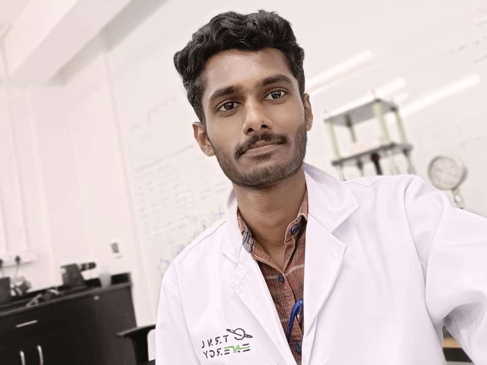
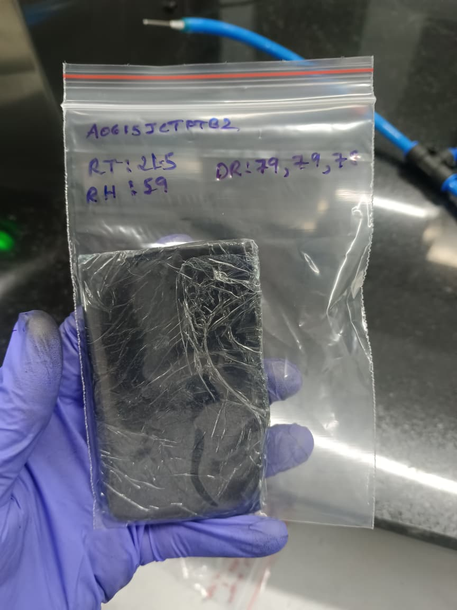
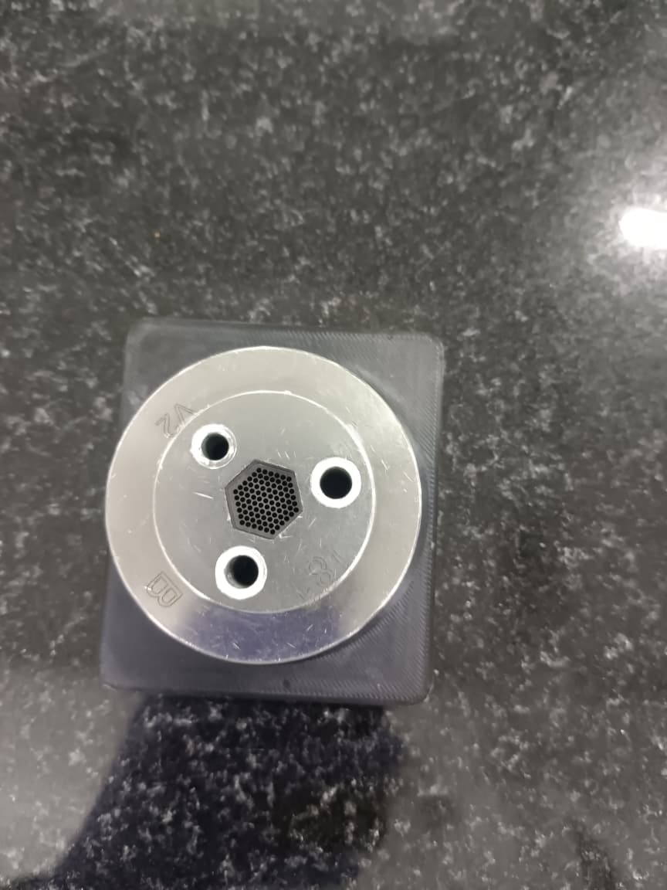
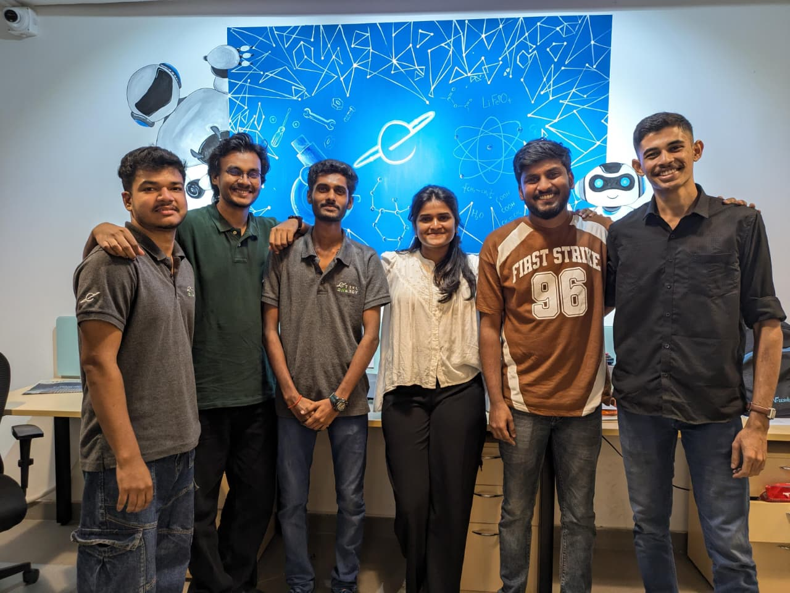

e-TRNL Energy
Material Processing Intern
May 2026 — July 2026
My Experience
I joined e-TRNL Energy as a Material Processing Intern, where I got my first hands-on exposure to battery electrode manufacturing. My work mainly involved the preparation and characterization of Semi Dry Mix (SDM) used for 3DEA electrode processing.
During the internship, I worked on preparing SDM batches and carrying out different material-level tests, including porosity testing, tap-density measurements, and powder conductivity measurements. I also worked through the actual preparation process rather than only performing measurements, which helped me understand how the material changes through different stages of processing. I also got hands-on exposure to 3D electrode processing, including punching SDM-based electrodes for 3DEA cells and coin-cell fabrication.
A major part of the experience was learning how to interpret the measurements and understand what they actually mean for electrode processing. Instead of just looking at whether a value was high or low, I started thinking about why the value changed and how material properties could affect the next stage of manufacturing.
This internship gave me a perspective that I couldn't get from battery simulations alone. Before this, most of my battery work had been through models, code, and simulation. Working directly with electrode materials helped me see the connection between the material being processed, electrode manufacturing, and the final battery performance.

First day of the internship

Hand made Anode SDM (Semi Dry Mix)

Punched 3DEA anode

Farewell Day